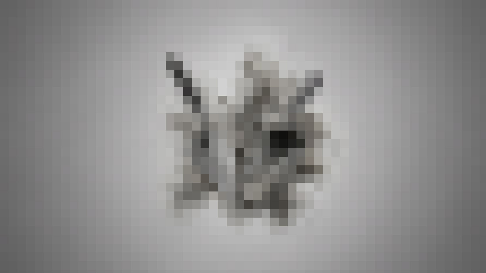

Role
Product Designer · Design Systems Strategist · Documentation Architect
Platform
Figma · React Component Library · Storybook · Chrome Grid Extension · nerdwallet.style
Duration
Design System Refresh
NerdWallet's style guide had existed for roughly two years. The company was growing, consistency mattered more every quarter, and the design system was supposed to make teams faster. Instead, many teams worked around it. The real brief was not to refresh the style guide. It was to make the official path faster than the workaround.

The Problem
The thirty-second breakpoint.
User research with 4 designers and 7 engineers clarified the failure. Most people were not unaware of the style guide. They were unwilling to interrupt real product work for a resource that made them hunt.
The primary job was simple: browse component variations. Yet that task was tedious. Pages carried too much unnecessary content, lacked the information designers needed, and made scanning harder than it should have been. Poor usability damaged the perceived reliability of the system itself. The system did not need more explanation at the top. It needed the answer at the top. Variants first. Usage second.


The Decision
A name made it real.
Naming was not decoration. It was adoption infrastructure. Before Currency, the system behaved like a shared internal resource — useful in theory, easy to ignore in practice. A name gave it something teams could reference in meetings, link to in documentation, and hold accountable over time.
Currency also fit the company. The word suggests value, exchange, shared acceptance, and daily use. A design system needs all four. The dedicated documentation destination reinforced the shift: a URL, a visual identity, and a recognizable product surface told the organization that the system had ownership. It was not a static archive. It was maintained infrastructure.
Adoption rarely happens through discipline alone. It happens when the right choice costs less effort than the wrong one.
The Architecture
Variants became the front door.
The central design move was structural. Each component page was reorganized around the way teams actually used it. Component variants moved to the top, where they could be scanned immediately. Designers could compare options without reading a wall of guidance first. Engineers could move into code and implementation once the correct pattern was clear.
The refresh introduced three scalable templates: Foundation, Component, and Pattern. Foundation pages handled core decisions. Component pages handled reusable UI. Pattern pages gave broader experience guidelines a proper home. A Chrome extension brought NerdWallet's grid directly onto live product pages — no separate spec, no remembered column rules. The same logic extended into Figma: a system-aligned library made correct components available where designers were already working.

Outcomes
The system earned return visits.
The launch changed the system's relationship with the organization. Teams returned to a resource they had previously abandoned. Designers and engineers could complete the most common task faster. The documentation became a working surface instead of a static reference.
3×
Weekly documentation visits within the first month after launch
80%
Of employees found the refreshed guide useful post-launch
50%+
Faster component-variant discovery with new templates
10+
Product teams served by the system

Reflection
The refresh solved the adoption layer, but it also exposed the next constraint: contribution throughput. A small central systems team can create standards, but it cannot absorb unlimited product-team demand without a stronger distributed model. The contribution decision tree clarified where work belonged. It did not fully solve who had the capacity to review, refine, and ship every contribution.
Design systems do not fail only because components are missing. They fail when the operating model is weaker than the demand placed on it. The front door had been designed. The review pipeline needed the same rigor.